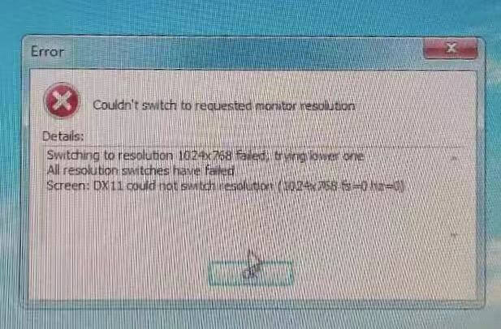
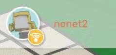

Window电脑请使用 Ctrl+F ,然后搜索问题进行查看
网络连接正常，操作时却提示网络没有连接

查看设置界面的语言，如果是英文，修改为中文后，点击"连接到创客帝国服务器"
安装软件出现错误，提示"error code 2503"，或者"error code 2502"

因为使用了非管理员用户安装，或者没有管理员权限，可以右键点击安装包，选择“使用管理员权限运行”。
如果右键没有“使用管理员权限运行”的用户，先打开任务管理器（快捷键ctrl+shift+esc）点击文件，点击运行新任务输入安装包路径勾选"以系统管理权限创建此任务",点击确定即可安装,参考下图

软件使用报错"Couldn’t switch to requested monitor resulution"
win10
右键ME图标，选择属性 -> 兼容性-> 关闭全屏优化
Win7/Win8/Win10：
方案1：找到或创建ME桌面快捷方式 -> 右键选择属性 -> 目标栏中在 .exe 后添加: “空格-w” 保存后双击图标即可打开程序。
方案2：更新DX版本，更新显卡驱动。
方案3：将屏幕分辨率调整到800x600后开启ME程序，然后将分辨率修改回原来的分辨率即可。
操作中出现"MakersEmpireWebPipe4.5已停止工作"

目前4.4.2.0版本中存在此问题，下个版本会进行修复，如果有此问题，可下载4.4.19版本
网盘链接:
https://pan.baidu.com/s/101AVWR3HvsNz19Psxlb-mg
提取码: r5sb
网络通畅，但是显示无法联网，"我的"标签页上面WIFI标志显示为黄色
用户在没有网络的情况下创建账号，会出现此情况，连接网络后，需要在"我的"界面，点击"现在连接"按钮，然后在弹出的窗口点击红叉即可同步账号


网络顺畅情况下，打开软件提示"连接错误"
服务器故障，请联系技术人员